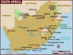

De: La Frikipedia, la enciclopedia extremadamente seria.
De: La Frikipedia, la enciclopedia extremadamente seria. De: La Frikipedia, la enciclopedia extremadamente seria.

|
FRIKIPEDIA QUIERE QUE ESTA DEFINICIÓN
PASE A SER UN ARTÍCULO FRIKIPÉDICO La información contenida en este artículo es una mínima parte de su jugo total, así que ponte los guantes, saca el tupperwere y empieza a exprimir el tema. Si lo haces serás recompensado con una galleta en almíbar y algo más. |
| De la serie Países del planeta tierra: | |||||
| República Totalitaria | |||||
|---|---|---|---|---|---|
| |||||
| Lema: Si National Geographic no venir, no comer | |||||
| Himno: "Un elefante se balanceaba sobre una tela de araña..."
| |||||
| 
| |||||
| Capital | No tiene | ||||
| Mayor ciudad | La casucha del negro josé | ||||
| Lenguas oficiales | Negro, Somalí, Español Castellano | ||||
| Gobierno | Dictadura con rasgos tribales | ||||
| Buwana | Mech Idi Amin Dada | ||||
| Área | 1234567890 km2 | ||||
| Población | unos 450 somalíes, 11 futbolistas y 6 leones | ||||
| Moneda | Piedra | ||||
| Zona horaria | La de los relojes de los reporteros de National Geographic | ||||
| Dominio Internet | No hay internet | ||||
| Código telefónico | 09
| ||||
| No mencionar ¡nunca! que su equipo de futbol es malo | |||||
Ghana es un país de Africa occidental (o sea para que los niños entiendan en las casas, para el lado de China). El país esta localizado sobre un desprendimiento desprendido de la placa tectónica Sudamericana hace 23 de años, y permanece "estacionado" en el continente africano gracias a una serie de fuerzas de atraccion de nuestro Tierra
Su economía consiste en la exportación de jugadores de furbol y la venta de imágenes de negros a la National Geographic.
Uno por 5 leros puede fotografiar a 25 mujeres Ghanesas a pecho desnudo (aunque es la costumbre porque si no, a tí IP anónima, jamas te lo harían)
Principalmente negros nazis (yo les decía que se apoderaban del mundo) y futboleros, por que la verdad Ghana sin furbol es una mierda un país sin mucho que ver.
Los Ghaneses suelen vivir en callampas que crecen del suelo chozas de 2º mano y hoyos en la tierra aunque si eres más suertudo puede que tengas tu propio shalet de poliestireno donado por la Natgeo ©
Ghana lleva felizmente 45 años gobernada por la tiranía de Mech Idi Amin Dada, descendiente no biológico de Idi Amin sin embargo es un joputa que tiene a su país en la ruina y controla los medios de comunicación el, todo el pueblo ghanes estaría en la ruina, tu tienes que amar a Idi Amin, amalo... amalo IP anónima, amaloooooo!!!!!!
Autor(es):